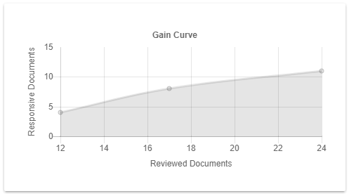

A Gain Curve shows how the recall achieved, depends on the number of Reviewed Documents. Instead of recall, the number of Responsive Documents found can be used.
The steeper the curve, the higher the gain
The gain curve is one of the main resources to display the overall performance of the classifier. When the gain curve is very steep, this means that most reviewed documents are responsive. There is a point where the improvement (number of additional responsive documents found) is not worth the cost of reviewing more documents. This point is reached when the curve flattens out. The plateau is an indication that the Assisted Review process has run to completion, that the quality of the classifier will probably not improve and that it can be terminated (stop condition).
